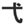

|  | rituals |
| SHIKI |
SHE KILLED the chicken at the voodoo ritual. |
|
On the top right, you see a new shape: two lines and a dot I guess you could think of some cavemen having a ceremony where they make fire (the dot) by rubbing the two sticks (lines) together) . . . and then you could say .. . At the ritual, the head caveman ceremoniously crafted fire ! |
| 結婚式 |
the marriage ceremony
★★★☆☆
|
| 葬式 | |
| 儀式 |
ceremony
☆☆☆☆☆
Usually refers to a religious ceremony. Or sometimes a secular one: a swearing-in of a new president, or even someone with O.C.D. who has to clap their hands 4 times whenever they touch a doorknob! |
|
japanese style
和式 和風 |
|
out of date, old-fashioned
時代遅れの 古くさい 古めかしい 旧式の 廃れる |
|
stocks and bonds
株 株式 |
 KANJIDAMAGE
KANJIDAMAGE
 Number
662
Number
662